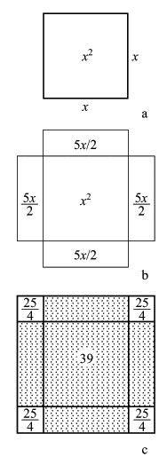
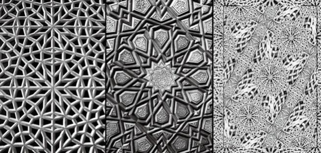
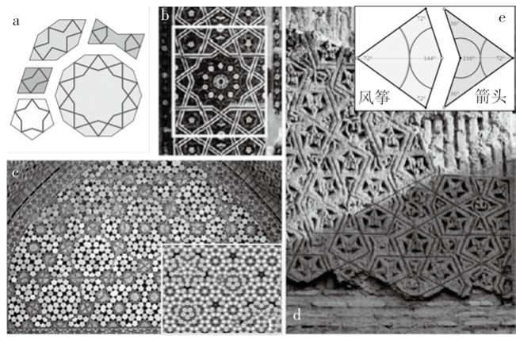

又过了三十五年，哈伦·拉希德（Harun al-Rashid，约公元766—公元809）登上哈里发宝座，黑衣大食进入鼎盛时期。其首都巴格达与唐朝的长安并列，同为世界第一流大城市，是科学研究、艺术交流、贸易往来的中心。罗马人、希腊人、中国人、印度人，各个民族汇集在这里。也正是这个时候，智慧之宫在巴格达出现。
智慧之宫本来是萨珊王朝对图书馆的称呼，后来被阿拉伯人所采纳。拉希德时期，巴格达的智慧之宫是继亚历山大里亚的缪斯殿和那烂陀的真理之山之后世界上最大、最重要的学术研究机构。从公元9世纪到13世纪的四百年间，大批阿拉伯学者聚集在这里从事研究、教育工作，同时把无数的波斯、希腊文著作翻译成阿拉伯文。
智慧之宫后来在蒙古人侵入之后被毁了。它原本拥有结构复杂、格局宏伟的大厅，柱子和屋顶都是洁白的大理石筑成的，精雕细刻出各种各样的花卉和精妙的几何图案，还有弯弯曲曲的文字缠绕其间。地面上镶嵌着亮闪闪的瓷片。整个大厅空空荡荡的，没有家具，也没有雕像，只是随意丢撒着一些坐垫和地毯，很多身穿白袍头裹白布的学者们盘坐在地上，有的高谈阔论，有的埋头读书。大厅的墙壁上密密麻麻全是四方形的孔，大约十五厘米见方，周围装饰着精致繁复的几何图形，花纹呈现白、绿、蓝、黄等颜色，让人目不暇接。那些方孔就是存放书籍的地方。跟亚历山大里亚的缪斯殿一样，当时的书籍大部分是卷起来的，所以需要像今天信箱类似的空间来存放。
拉希德的儿子接任哈里发后，做了一个奇怪的梦，梦中亚里士多德来到宫廷与他谈话。他醒来后，下令把能找到的古希腊学术著作全部翻译成阿拉伯文。这些希腊文本一部分来自逃亡的希腊学者，更多的来自于拜占庭王朝。当时阿拉伯帝国和东罗马帝国之间冲突频繁，和约屡签屡毁。签约时双方按照惯例互赠礼物，查士丁尼之后的拜占庭对古希腊的非基督徒文化持完全蔑视的态度，既然阿拉伯人感兴趣，把那些没用的古希腊纸草卷送给他们大概是最合算的礼物了。
智慧之宫第一位负责人名叫穆罕默德·伊本·穆萨-花拉子密（Muhammad ibn Mūsā al-Khwārizmī，约公元780—约公元850）。他是波斯人，年轻时便离开了家乡，前往当时的学问中心巴格达。他先在宫廷里服务，后来又去了智慧之宫，主要负责把古希腊、古波斯和古印度的科学文献，特别是数学和天文学文献，翻译成阿拉伯文。在翻译期间，他进行了大量的独立研究。
公元820年，花拉子密在巴格达出版了一本划时代的书，名叫《移项和集项的计算》，这本书的阿拉伯语名字是Hisab al-jabr wa'l-muqabalah（英语译名为The Compendious Book on Calculation by Completion and Balancing）。阿拉伯文的al-jabr一词，原意是平衡或重组，含义相当广泛。比如骨头断了，是一种平衡的丧失；接骨师接上，就恢复了平衡（重组）；因此，al-jabr在阿拉伯语中可以指接骨师。不过在花拉子密的书名里，al-jabr指的是一种平衡的代数运算──移项完成后，等式两端恢复平衡。在这本书中，花拉子密已经有了明确的负数概念──他知道，把等式一端带有负号的项移到等式另一端，就应该把该项用正号来表达了。这就是我们今天说的“移项”。这本书转译成欧洲文字，书名逐渐简化，其内容就以al-jabr这个词代之，经过一段时间的演化，英文就多了一个新词──代数（algebra）。
早期的代数与几何紧密相关。我们前面讲到的希腊人研究二倍立方的方法，全部是依靠几何概念进行的。花拉子密首开静态方程求解之端，代数从此独立于几何。同样重要的是，他把具体的数学问题抽象化，使得人们不再像《九章算术》那样单独处理一个个数学问题。数学的解有了接近于今天“公式”的雏形。
花拉子密是第一位明确看到代数和几何之间的密切联系的人。他有一个著名的求解一元二次方程的方法，名叫“填补方块法”。比如，如何求解方程 x2+10x=39。
花拉子密说，未知数x的平方（x2）代表一个边长为x的方块的面积（图21a）。10x也是一个面积。我们现在把面积10x四等分，每份都是长方形，使长方形的一条边等于x，那么长方形的另一条边就等于 5/2。这个道理从图21b中很容易看到。现在我们知道，39就是图21b画出的面积的总和。怎么解出x呢？花拉子密说看看图21c就知道了。图21c是一个比x2大一圈的方块，它的面积同图21b的差就是那四个小方块。而我们已经知道这些小方块的大小：它们每一个的边长都是 5/2。

图 21： 花 拉 子 密 的“ 填补方块法”可以用来求解 x2 + bx = c 一类的二次方程（其中 b 和 c 都是正数）
花拉子密翻译过《阿耶波多历书》，还引进了印度数字（也就是我们今天所说的阿拉伯数字），采用10进位制进行算术计算。这些后来都被引介到欧洲，逐渐代替了欧洲原有的算板计算及罗马的记数系统。欧洲人把他的名字拉丁化，叫作Algorithm。后来，人们便称那种采用印度—阿拉伯数字来进行的、有规则可寻的计算方法为Algorithm（算则）。
在自己的书中，花拉子密把精力集中在线性方程和二次方程上。他没有涉及三次方程，也没有意识到等于零的根，更不懂负数的根。而早在公元7世纪，本书前面提到过的印度数学家婆罗摩笈多在解决一元二次方程的时候，就认识到负数根了。花拉子密的贡献在于把代数从附属于几何的位置上独立出来，代数学从此突飞猛进。

图 22：五彩缤纷的阿拉伯式花纹
花拉子密还研究过阿耶波多与婆罗摩笈多的三角学，并进行了大大的改进。这里顺便说一下，几何学在阿拉伯帝国崛起期间也得到长足的发展。阿拉伯人发明了极为繁复华丽的几何装饰图案，被称为阿拉伯式花纹。
阿拉伯式花纹不仅在视觉上美丽迷幻，充满象征意义，在数学上也极为精准，所以它们既是艺术也是科学。公元2007年，哈佛大学的华裔博士后陆述义和他的普林斯顿大学博士导师斯坦哈特（Paul Joseph Steinhardt，公元1952—）在《科学》杂志上报告，他们发现了阿拉伯式花纹的五种基本元素（图23a）：十边形、五边形、菱形、拉长六边形、领结形。从任何一条边作两条线段，都与该边成五十四度角（请参考图23a中五种元素中的蓝色线段）。这五种元素可以构成无穷种图案。陆述义证明，这五种几何元素都可以由著名的潘洛斯（Roger Penrose，公元1931—，英国数学物理学家）潘洛斯铺砖法（Penrose tiling）中的两种最基本元素（风筝形和箭头形，参见图23e）构成。而这种瓷砖法可以构成二维非周期但自我相似的无线延展，是描述准晶的理论基础。所谓的准晶是一种介于晶体和非晶体之间的固体。准晶具有与晶体相似的长程有序的原子排列；但是准晶不具备普通晶体的平移对称性。这种平移对称性要求普通晶体只能具有二向、三向、四向或六向旋转对称性，但是准晶具有无法向空间无限延展的对称性，例如五向对称性或者六向以上的对称性，在几何上是一种非周期平铺图形。从图23b—23d我们可以看到阿拉伯式花纹常常具有五向或十向对称性。1986年，以色列物理学家丹尼尔·舍特曼（Daniel Shechtman，公元1941— ）在快速冷却的铝锰合金中发现了一种新的金属相，其电子衍射斑具有明显的五次对称性，这是第一次发现准晶。丹尼尔·舍特曼因此获得2011年诺贝尔化学奖。
图23f是现代科学理论给出的银铝合金准晶的原子模型，你看，它跟图23c的图案非常相像。一千年前的建筑装饰预言了现代准晶的原子分布图案，这难道不是很神奇吗？

图 23：a：阿拉伯式花纹的五个基本元素。b—d：几种清真寺礼拜堂的几何图形。e：潘洛斯第二类瓷砖法的两个基本元素。f：银铝合金准晶的原子模型
公元9世纪的初叶，有一位在巴格达工作的数学家写了一本开创性的著作，其中解释了平衡方程（也就是把从方程一侧减掉的量加到方程的另一侧）的用处。他把这个过程称为al-jabr（阿拉伯语“回复、重建”的意思），这个字后来变成了algebra。在他死后很久之后，他中了词源学的大奖：他自己的名字花拉子密（Khwarizmi）今天活在“运算法则”（Algorithm）这个词里面。
史蒂文·斯特罗加斯：《x的喜悦》
你来试试看？本章趣味数学题：
根据图21，请读者利用花拉子密的方法求解x2+10x=39。